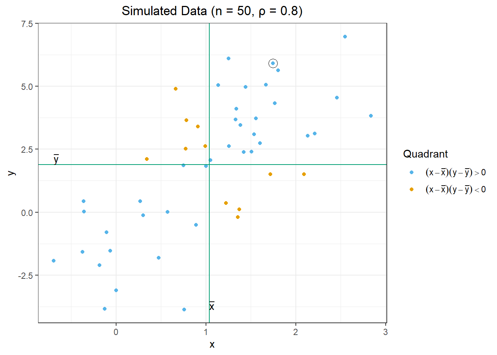

# Set random seed
set.seed(2412)
# Specify means and standard deviation
n <- 5 # number of points
mu <- 10 # mean
sigma <- 3 # standard deviation
# Simulate normal data
sim_data <- data.frame(x = round(rnorm(n, mu, sigma), 1)) %>%
arrange(x)Chapter 2: Correlation
Lesson 1 (60 mins): Covariance and Correlation
Objectives:
Define covariance, correlation
Compute covariance and correlation
Agenda:
Introduction (5 mins)
Motivate covariance and correlation
Learning Journal Exchange (10 mins)
Class Activity: Variance and Standard Deviation (15 mins)
We will explore the variance and standard deviation in this section.
- What do the standard deviation and the variance measure?
The following code simulates observations of a random variable. We will use these data to explore the variance and standard deviation.
The data simulated by this process are:
Find the mean of these numbers.
What are some ways to interpret the mean?
The variance and standard deviation are individual numbers that summarize how far the data are from the mean. We first compute the deviations from the mean, \(x - \bar x\). This is the directed distance from the mean to each data point.
Warning in is.na(x): is.na() applied to non-(list or vector) of type
'expression'
We can summarize this information in a table:
| x | x - mean(x) | Workspace for your use |
|---|---|---|
| 6.9 | -2.5 | |
| 7.7 | -1.7 | |
| 8.1 | -1.3 | |
| 10.8 | 1.4 | |
| 13.5 | 4.1 |
How can we obtain one number that summarizes how spread out the data are from the mean? We may try averaging the deviations from the mean.
What is the average deviation from the mean?
Will we get the same value with other data sets, or is this just a coincidence?
What could you do to prevent this from happening?
Apply your idea. Compute the resulting value that summarizes the spread. What do you get?
What is the relationship between the sample variance and the sample standard deviation?
Use the table above to verify that the sample variance is 7.4.
Show that the sample standard deviation is 2.7203.
Class Activity: Covariance and Correlation (15 mins)
Caution
Insert Chpt2App.R
The following code simulates \((x,y)\)-pairs of random variables.
# Unset random seed
set.seed(Sys.time())
# Specify means and correlation coefficient
n <- 50 # number of points
mu <- c(1.25, 2.5) # mean vector (mu_x, mu_y)
sigma_x <- 1 # standard deviation x
sigma_y <- 3 # standard deviation y
rho <- 0.8 # correlation coefficient
# Define variance-covariance matrix
sigma <- matrix(
c(sigma_x^2,
rho*sigma_x*sigma_y,
rho*sigma_x*sigma_y,
sigma_y^2),
nrow = 2)
# Simulate bivariate normal data
mvn_data <- MASS::mvrnorm(n, mu, sigma) %>%
data.frame() %>%
rename(x = X1, y = X2)The following table illustrates some of the simulated values. The mean of the \(x\) values is \(\bar x = 1.103\). The mean of the \(y\) values is \(\bar y =2.122\). We will soon use the values \((x-\bar x)\), \((x-\bar x)^2\), \((y-\bar y)\), \((y-\bar y)^2\), and \((x-\bar x)(y-\bar y)\). For convenience, they are included in the table below.
| i | x | y | x-mean(x) | (x-mean(x))^2 | y-mean(y) | (y-mean(y))^2 | (x-mean(x))(y-mean(y)) |
|---|---|---|---|---|---|---|---|
| 1 | -0.273 | -1.083 | -1.375 | 1.892 | -3.204 | 10.268 | 4.408 |
| 2 | 1.784 | 5.375 | 0.682 | 0.465 | 3.253 | 10.585 | 2.217 |
| 3 | -0.265 | -3.623 | -1.368 | 1.871 | -5.745 | 33 | 7.858 |
| 4 | 0.834 | 1.17 | -0.268 | 0.072 | -0.951 | 0.905 | 0.255 |
| 5 | 1.419 | 2.951 | 0.316 | 0.1 | 0.829 | 0.688 | 0.262 |
| 6 | 1.907 | 2.996 | 0.805 | 0.647 | 0.874 | 0.764 | 0.703 |
| 7 | 0.452 | -0.425 | -0.651 | 0.424 | -2.547 | 6.486 | 1.658 |
| 8 | 1.792 | 5.118 | 0.689 | 0.475 | 2.997 | 8.981 | 2.066 |
| 9 | 1.131 | 4.393 | 0.029 | 0.001 | 2.271 | 5.157 | 0.065 |
| 10 | 0.027 | 0.206 | -1.075 | 1.156 | -1.916 | 3.67 | 2.06 |
| 11 | 1.181 | 3.689 | 0.078 | 0.006 | 1.567 | 2.455 | 0.123 |
| 12 | 0.742 | -0.463 | -0.361 | 0.13 | -2.585 | 6.681 | 0.932 |
| 13 | 1.789 | 2.018 | 0.687 | 0.472 | -0.104 | 0.011 | -0.071 |
| : | : | : | : | : | : | : | : |
| : | : | : | : | : | : | : | : |
| 48 | 2.194 | 5.63 | 1.092 | 1.192 | 3.508 | 12.308 | 3.83 |
| 49 | 2.621 | 5.905 | 1.518 | 2.305 | 3.783 | 14.312 | 5.743 |
| 50 | 1.724 | 4.106 | 0.621 | 0.386 | 1.984 | 3.937 | 1.233 |
| sum | 55.128 | 106.082 | 0 | 30.191 | 0 | 395.9 | 83.527 |
The simulated values are plotted below, with vertical lines drawn at \(x = \bar x\) and \(y = \bar y\). The first simulated point \((i=1)\) is circled.

If the quantity \((x-\bar x)(y-\bar y)\) is greater than zero, the points are colored blue. Otherwise, they are colored orange.
What color are the points if \((x-\bar x)\) and \((y-\bar y)\) have the same sign?
What color are the points if \((x-\bar x)\) and \((y-\bar y)\) have different signs?
To compute the sample covariance, we divide the sum of the \((x - \bar x)(y - \bar y)\) values by \(n-1\):
\[ Cov(x,y) = \frac{\sum\limits_{i=1}^n (x - \bar x)(y - \bar y)}{n-1} = \frac{83.527}{50 - 1} = 1.705 \]
You can think of this as an “average” of the \((x - \bar x)(y - \bar y)\) values. The only difference is that we divide by \(n-1\) instead of \(n\).
- If there are more blue points than orange points, what should the sign of the sample covariance be? Why?
- What does the sample covariance tell us?
The sample covariance is related to the sample standard deviation of \(x\) and \(y\) and the sample correlation coefficient between \(x\) and \(y\).
The sample standard deviations are:
\[ \begin{align*} s_x &= \sqrt{ \frac{\sum\limits_{i=1}^n (x - \bar x)^2}{n-1} } = \sqrt{ \frac{ 30.191 }{ 50-1 } } = 0.785 \\ s_y &= \sqrt{ \frac{\sum\limits_{i=1}^n (y - \bar y)^2}{n-1} } = \sqrt{ \frac{ 395.9 }{ 50-1 } } = 2.842 \end{align*} \]
The sample correlation coefficient is: \[ r = \frac{\sum\limits_{i=1}^n (x - \bar x)(y - \bar y)}{\sqrt{\sum\limits_{i=1}^n (x - \bar x)^2} \sqrt{\sum\limits_{i=1}^n (y - \bar y)^2}} = \frac{ 83.527 }{ \sqrt{ 30.191} \sqrt{ 395.9} } = 0.764 \]
What do you get if you multiply the equations for \(r\), \(s_x\), and \(s_y\) together? \[ \begin{align*} r \cdot s_x \cdot s_y &= \frac{\sum\limits_{i=1}^n (x - \bar x)(y - \bar y)}{\sqrt{\sum\limits_{i=1}^n (x - \bar x)^2} \sqrt{\sum\limits_{i=1}^n (y - \bar y)^2}} \cdot \sqrt{ \frac{\sum\limits_{i=1}^n (x - \bar x)^2}{n-1} } \cdot \sqrt{ \frac{\sum\limits_{i=1}^n (y - \bar y)^2}{n-1} } \\ ~&~\\ &=\\ ~&~\\ \end{align*} \]
Use the numerical values above to confirm your result. Any discrepancy is due to roundoff error.
Team Activity: Computational Practice (15 mins)
With your assigned partner, compute the following values for the \(n=6\) values given in the table below:
\(\bar x =\)
\(\bar y =\)
\(s_x =\)
\(s_y =\)
\(r =\)
\(Cov(x,y) =\)
| i | x | y | x-mean(x) | (x-mean(x))^2 | y-mean(y) | (y-mean(y))^2 | (x-mean(x))(y-mean(y)) |
|---|---|---|---|---|---|---|---|
| 1 | -2.1 | 2.8 | -1.9 | 3.61 | 1 | 1 | -1.9 |
| 2 | -0.2 | 2.2 | |||||
| 3 | 0.8 | 0.9 | |||||
| 4 | 0.4 | 2 | |||||
| 5 | 2.3 | -1 | |||||
| 6 | -2.4 | 3.9 | |||||
| sum | -1.2 | 10.8 |

Recap (5 min)
Working with your partner, prepare to explain the following concepts to the class:
Variance
Standard deviation
Correlation
Covariance